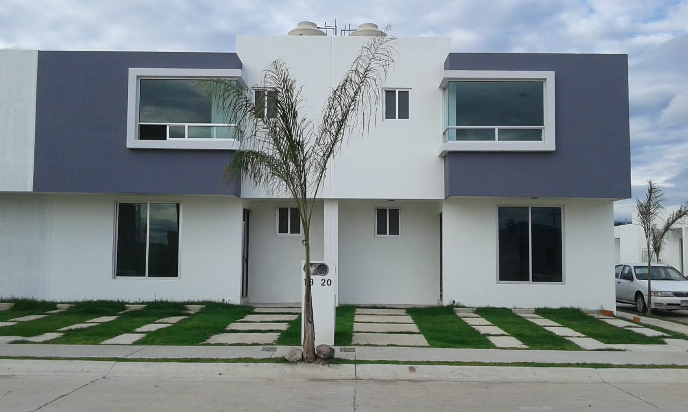
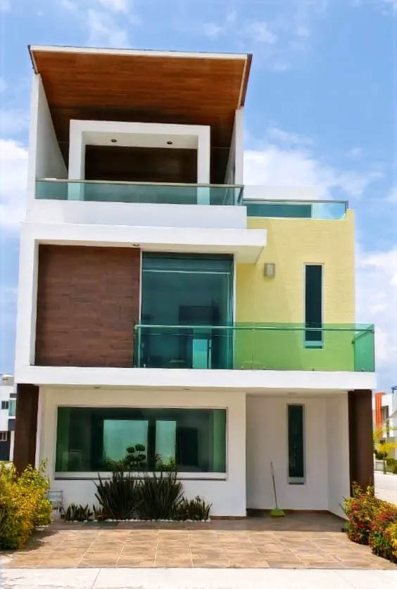
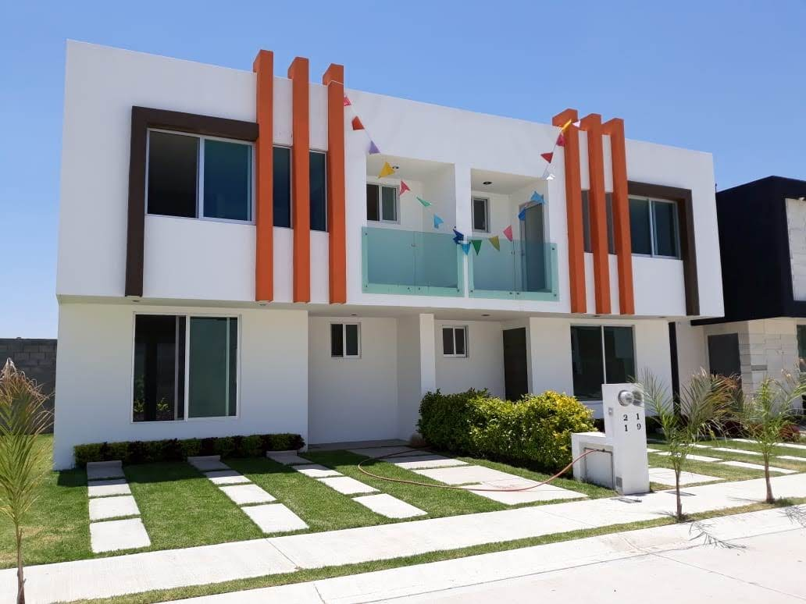
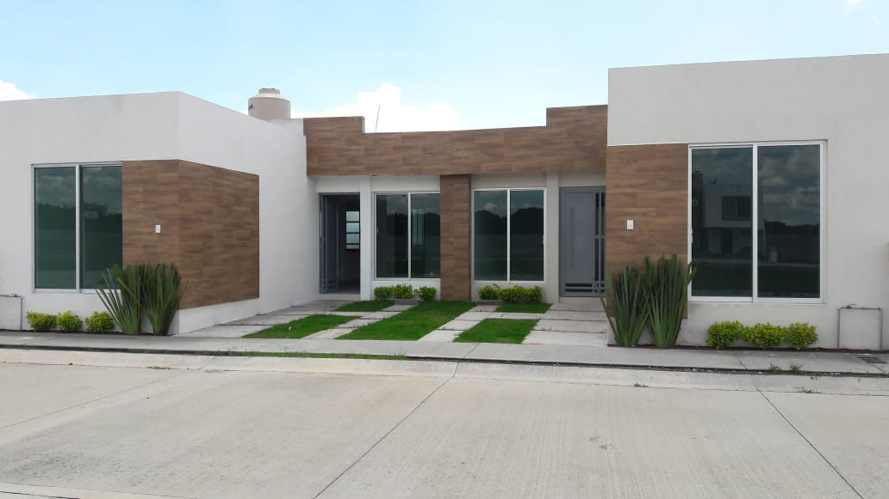
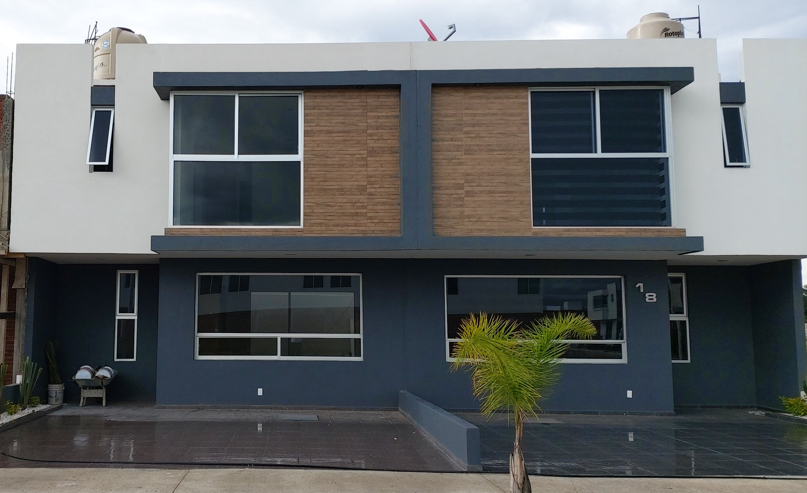

MODELO DE VIVIENDA
Ver foto Paulina
Una mirada a la propuesta arquitectónica del modelo.
Una selección visual de modelos residenciales que forman parte del archivo original del proyecto.

Las fotografías forman parte del proyecto académico original. Los modelos mostrados son referenciales y no indican disponibilidad comercial.

Una mirada a la propuesta arquitectónica del modelo.

Detalle visual del diseño residencial.

Composición de fachada y carácter de vivienda.

Otra perspectiva del conjunto de modelos.

Una alternativa visual dentro del catálogo.